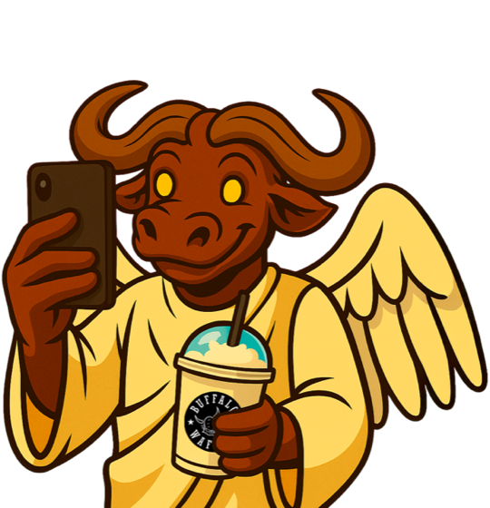
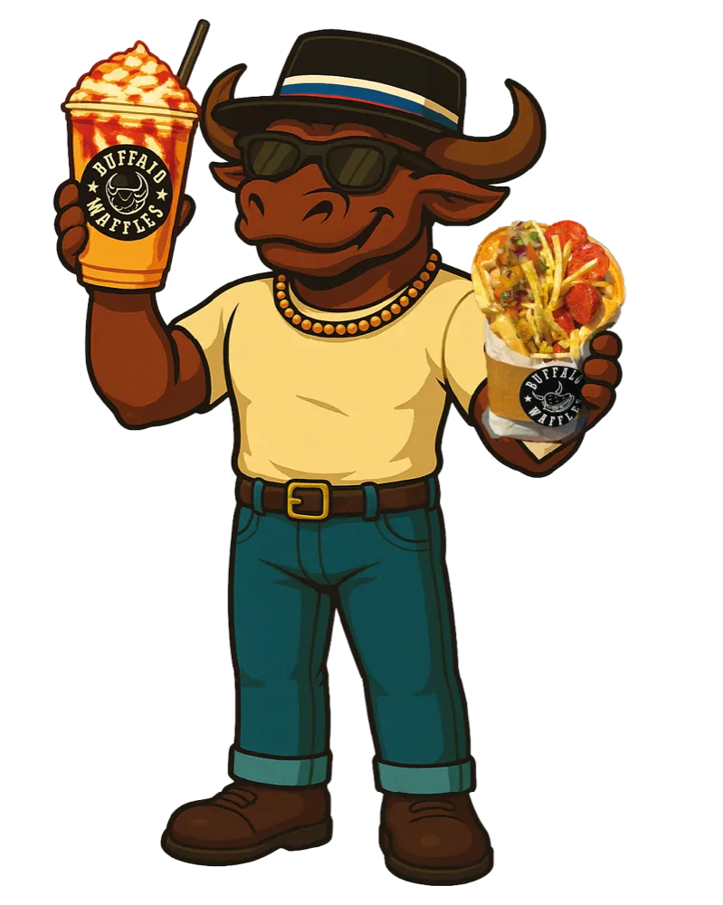
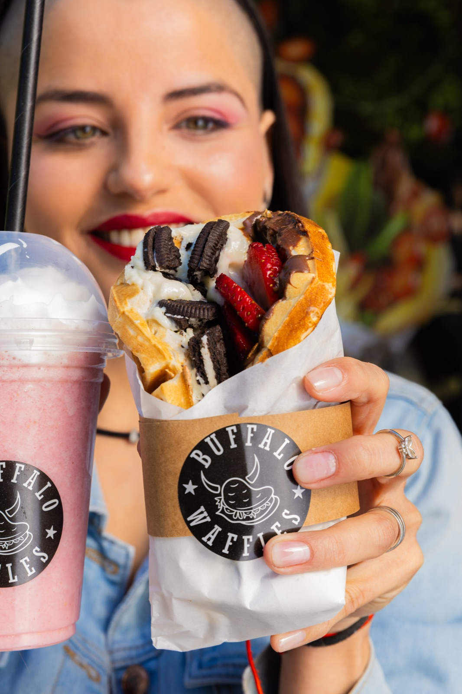

Design system para el sitio de captación de franquiciados (buffalofranquicias.com). Tokens heredados del DS de consumidor + capa web: tipografía fluida, grilla, temas de sección con contraste AA verificado, motion con reduced-motion y 20 componentes HTML/CSS listos para mapear a módulos de HubSpot. Compilado el 2-oct-2026 a partir de las cards de components/. Lee primero GUIA-DISENADORES.md.
Color · primitivos
Los componentes NO usan estos colores directo: usan los tokens semánticos del tema (abajo). Ratios WCAG 2.x calculados.
Oficiales · Brandbook 2026 p.19
White (oficial)--bw-white#ffffffvs blanco 1.00 · vs ink 18.28Tarjetas de datos, formulario
Black (oficial)--bw-true-black#000000vs blanco 21.00 · vs ink 1.15Logo, contorno sticker
Fire Yellow (oficial)--bw-gold#f5b60evs blanco 1.81 · vs ink 10.08FONDO con texto ink. Nunca texto sobre claro
Magenta (oficial)--bw-magenta#e74691vs blanco 3.70 · vs ink 4.95Fondo con texto ink · badges
Neutros cálidos (heredados)
Ink--bw-ink#191410vs blanco 18.28 · vs ink 1.00Texto y fondo oscuro web
Ink soft--bw-ink-soft#3a2f27vs blanco 13.00 · vs ink 1.41Texto secundario
Charcoal--bw-charcoal#241d18vs blanco 16.61 · vs ink 1.10Tarjetas en noche
Paper--bw-paper#fbf4e6vs blanco 1.09 · vs ink 16.70Lectura larga
Cream--bw-cream#f6e7c6vs blanco 1.22 · vs ink 14.94Fondo base tema claro
Cream deep--bw-cream-deep#efd9a9vs blanco 1.38 · vs ink 13.20Chips, filas alternas
Kraft--bw-kraft#c89a5evs blanco 2.55 · vs ink 7.17Textura, separadores
Acentos de apoyo (heredados)
Teal--bw-teal#1f6e6avs blanco 6.01 · vs ink 3.04Bloque "soporte" (texto crema/blanco)
Teal soft--bw-teal-soft#3a9791vs blanco 3.49 · vs ink 5.24Éxito sobre oscuro
Strawberry--bw-strawberry#e23a2bvs blanco 4.31 · vs ink 4.24Solo decorativo
Gold soft--bw-gold-soft#f9c85evs blanco 1.56 · vs ink 11.71Hover de CTA oro
Magenta soft--bw-magenta-soft#ee7baevs blanco 2.60 · vs ink 7.03Texto magenta sobre oscuro
NUEVO v2 · variantes "para texto" (AA en blanco, papel, crema y crema-deep)
Magenta 700--bw-magenta-700#b71862vs blanco 6.32 · vs ink 2.89Links y acento-texto en claro
Gold 700--bw-gold-700#7c5b05vs blanco 6.26 · vs ink 2.92"Oro" como texto en claro
Kraft 700--bw-kraft-700#7c592avs blanco 6.33 · vs ink 2.89Kraft como texto
Strawberry 700--bw-strawberry-700#b92619vs blanco 6.26 · vs ink 2.92Error / alerta
Teal 700--bw-teal-700#1e6a66vs blanco 6.35 · vs ink 2.88Éxito / soporte
Muted--bw-muted#665540vs blanco 7.15 · vs ink 2.56Texto apagado en claro
Cream muted--bw-cream-muted#b4a88fvs blanco 2.35 · vs ink 7.78Texto apagado en oscuro
Control line--bw-control-line#7c7362vs blanco 4.68 · vs ink 3.90Borde de inputs (≥ 3:1)
NUEVO v2 · tintes (fondo de chips/tarjetas, texto ink)
Gold 100--bw-gold-100#fde9b3vs blanco 1.20 · vs ink 15.22Opción elegida, chips
Magenta 100--bw-magenta-100#f9d9e8vs blanco 1.30 · vs ink 14.03"Lo que no", flags
Teal 100--bw-teal-100#d5e8e6vs blanco 1.27 · vs ink 14.37"Lo que buscamos"
PENDIENTES — no usar (Brandbook p.19, datos incompletos/inconsistentes en el PDF)
PERSIAN PLUM#661a2bR102 G26 B43 (coincide)Confirmar con el cliente antes de usar
LAIRD GREEN#7e823dR126 G103 B130 (NO coincide con el hex)Confirmar con el cliente antes de usar
Temas de sección y bloques de color
Una clase en la <section> cambia texto, links, CTAs, bordes y foco. Pares verificados:
Obligatorio: con prefers-reduced-motion: reduce todas las duraciones pasan a 0 (tokens/motion.css). Nunca animar cifras, requisitos, formularios ni texto al hacer scroll.
Cifras publicadas en buffalofranquicias.com (consulta: 2-oct-2026). El blog del mismo sitio informa «más de 55 locales». Unificar en una sola cifra con fecha de corte (ej.: «55 locales a sept. 2026»).
Estimación informada por Buffalo Waffles. Falta: periodo, n.º de locales considerados, definición de EBITDA y cuántos locales alcanzan la cifra. Resultados individuales pueden variar según ubicación, formato y gestión; no constituye garantía de rentabilidad. A validar por legal
Mascota (bloque oro) — mascota a sangre, sin cifras al lado
Franquicias Buffalo
Tú pones la energía. Nosotros, la marca.
Nosotros ponemos la marca, el sistema y el acompañamiento. Tú pones la energía para hacerlo crecer.
Cifras publicadas en buffalofranquicias.com (consulta: 2-oct-2026). El blog del mismo sitio informa «más de 55 locales». Unificar en una sola cifra con fecha de corte (ej.: «55 locales a sept. 2026»).
Estimación informada por Buffalo Waffles. Falta: periodo, n.º de locales considerados, definición de EBITDA y cuántos locales alcanzan la cifra. Resultados individuales pueden variar según ubicación, formato y gestión; no constituye garantía de rentabilidad. A validar por legal
Bento (--bento) sobre noche, con tarjeta destacada
Cifras publicadas en buffalofranquicias.com (consulta: 2-oct-2026). El blog del mismo sitio informa «más de 55 locales». Unificar en una sola cifra con fecha de corte (ej.: «55 locales a sept. 2026»).
Estimación informada por Buffalo Waffles. Falta: periodo, n.º de locales considerados, definición de EBITDA y cuántos locales alcanzan la cifra. Resultados individuales pueden variar según ubicación, formato y gestión; no constituye garantía de rentabilidad. A validar por legal
Por qué Buffalo (features)
Diferenciales del negocio en bento, con dato verificable por tarjeta. · Card · Notas
Bento sobre papel — diferenciales del negocio (contenido real)
El negocio
Un negocio que ya funciona
Un modelo probado, con productos de calidad y una experiencia que marca diferencia.
Marca 100% chilena
No somos una franquicia tradicional
Una marca chilena, cercana y dinámica que ha desafiado las reglas de la comida rápida con una propuesta innovadora y una identidad propia.

Modelo probado
Más de cincuenta locales activos, operando con un modelo probado. Marca instalada con demanda real y crecimiento sostenido.
+50 locales · de Arica a Punta Arenas
Equipo chico, gestión simple
La operación diaria no requiere un equipo grande: puedes operarlo tú o delegar en un administrador.
2 personas full time + 2 part time (fin de semana)
Venta en local y delivery
Las ventas provienen de clientes presenciales y de plataformas de delivery, para aprovechar distintos momentos de consumo.
2 canales de venta
Marketing de marca
Campañas de marketing digital, promociones y posicionamiento que benefician a toda la red.
Fondo de marketing: 2% de las ventas netas
ProcessSteps
Los 7 pasos reales y el plazo de 2 a 4 meses desde la firma. · Card · Notas
Línea de tiempo (tema crema) — 7 pasos reales + plazo firma → apertura
Paso a paso
Así te conviertes en franquiciado
Siete pasos claros, con acompañamiento en cada uno.

Completa el formulario de interés
Toma 1 minuto. Con eso preparamos la primera conversación.
Reunión de presentación
Conoces el modelo con un ejecutivo de franquicias y resuelves tus dudas.
Evaluación de perfil e inversión
Revisamos juntos tu perfil y tu capacidad de inversión.
Búsqueda y aprobación del local
Nuestro equipo te acompaña a buscar, evaluar y negociar la ubicación.
Firma de contratos
Contrato de franquicia por 20 años. El derecho de franquicia ($10.000.000 + IVA) se paga al firmar.
Capacitación y habilitación
Capacitación para ti y tu equipo, y habilitación y equipamiento del local.
Apertura del local
Apoyo comercial y de marketing para el lanzamiento, y acompañamiento presencial en la inauguración.
2 a 4 meses desde la firma hasta la apertura (pasos 5 a 7), según la disponibilidad del local y los tiempos de habilitación.
Postular no tiene costo. «Sin compromiso»: confirmar con el cliente antes de usarlo.
Requisitos — «Esto no es para todos»
Manifiesto real + requisitos medibles + buscamos/no buscamos + tabla de costos. · Card · Notas
Tema blanco (capa de datos) — manifiesto real + requisitos medibles + costos publicados
Franquicia Buffalo Waffles
Esto no es para todos
Buffalo Waffles es un modelo probado, pero necesita de alguien que lo ejecute bien. Buscamos personas con mentalidad emprendedora, foco en la operación y ganas reales de construir algo propio.
Nosotros ponemos la marca, el sistema y el acompañamiento. Tú pones la energía para hacerlo crecer.
Si te hace sentido, este puede ser tu lugar.
$40MInversión total desdeSegún formato y ubicación. ¿Incluye el derecho de franquicia?
[$X]Capital propio mínimoNo publicado. Definir con el cliente (¿hay financiamiento?).
Operar o delegarDedicaciónPuedes operarlo tú o con un administrador, siguiendo los indicadores del local.
Sin experienciaen gastronomíaMuchos franquiciados vienen de otros rubros.
Lo que buscamos
Capacidad de inversión y orientación comercial.
Compromiso con la marca y con seguir sus estándares operativos.
Mentalidad emprendedora y foco en la operación.
Lo que no
Una inversión 100% pasiva: incluso con administrador, te pedimos seguir los indicadores.
Atajos con los estándares de la marca.
Copy propuesto: validar con el cliente.
Costos publicados por Buffalo Waffles
Concepto
Monto
Frecuencia
Inversión total
Desde $40.000.000
Al inicio
Derecho de franquicia
$10.000.000 + IVA
Pago único, al firmar
Royalty
7% de las ventas netas
Mensual
Fondo de marketing
2% de las ventas netas
Mensual
Duración del contrato
20 años
—
Fuente: artículo «Cómo funciona una franquicia de comida» (blog de buffalofranquicias.com, 12-ago-2026) y FAQ del sitio. Formatos de local (m² y rango por formato): pendiente.
SupportGrid
Soporte por etapa (antes, apertura, después) + KAM 1:10. · Card · Notas
Bloque teal — por etapa + KAM (contenido real del blog y la FAQ)
Siempre contigo
Te acompañamos antes, durante y después
1 : 10
Cada KAM (consultor de franquicia) acompaña a un máximo de 10 franquiciados: seguimiento cercano en la apertura y durante toda la operación.
Antes de abrir
Partir bien
Búsqueda, evaluación y negociación del local.
Capacitación inicial para ti y tu equipo ([N] días).
Manuales operativos y acceso a proveedores homologados.
Apertura
Abrir con todo
Habilitación y equipamiento del espacio.
Apoyo comercial y de marketing para el lanzamiento.
Acompañamiento presencial durante la inauguración.
Después
Crecer
Seguimiento comercial de los indicadores del local con tu KAM.
Capacitación continua y desarrollo de nuevos productos.
Marketing digital y campañas de marca a nivel nacional.
Testimonial
Franquiciados reales con local; variante video con subtítulos. · Card · Notas
Grilla de testimonios reales (tema papel) + variante video
Franquiciados reales
Lo dicen los que ya están
“
Ser parte de la red de franquicias de Buffalo Waffles ha significado trabajar junto a una marca que entrega confianza, cercanía y un verdadero acompañamiento en cada etapa. Más que una franquicia, hemos encontrado un espacio donde nuestros objetivos pueden crecer con respaldo, apoyo humano y una visión compartida de éxito.
JJonathan Franquiciado de Boulevard Marina · ciudad y años en la red“
Gracias a nuestra pasión, la dedicación de todo nuestro equipo y una marca excepcional como Buffalo Waffles hemos conseguido instalar un negocio exitoso que ha conectado con las personas de Iquique y esperamos dejar huellas en la región de Tarapacá.
E&AEduardo y Alex Franquiciados de Mallplaza Iquique · Región de Tarapacá · años en la red

0:45 · con subtítulos
Placeholder: video de 30–60 s de un franquiciado hablando del negocio (no hay material aún).
?Nombre Local · ciudad · años en la red · un dato de negocio
LocationsMap
Mapa estático placeholder + lista de regiones accesible + estados. · Card · Notas
Mapa placeholder + lista de regiones (tema crema)
Buffalo in da house
Desde Arica hasta Punta Arenas
Hoy tenemos locales en 11 regiones y buscamos crecer en distintas zonas del país. Evaluamos cada caso según el potencial comercial, la cobertura actual y la disponibilidad territorial.
Esquema ilustrativo, no es cartografía. Reemplazar por el mapa definitivo y la lista de locales con dirección.
Con localesDisponiblePocas plazasTomada
Estados de disponibilidad por zona: pendientes. Mostrar «Pocas plazas» solo con datos reales.
¿Cuánto cuesta abrir una franquicia de Buffalo Waffles?
La inversión total depende del formato y ubicación del local, pero generalmente parte desde los $40 millones de pesos. Este monto considera la habilitación del local, equipamiento, capacitación y otros elementos necesarios para comenzar a operar.
¿Qué incluye la inversión?
La inversión considera el derecho de franquicia, capacitación inicial, apoyo en la apertura, manuales operativos, acompañamiento comercial y acceso a proveedores homologados. El detalle específico se entrega durante el proceso de evaluación.
¿Puedo tener la franquicia como inversión y contratar a un administrador?
Sí. Existen franquiciados que participan activamente en la operación y otros que administran el negocio a través de un encargado. En ambos casos, recomendamos involucrarse en el seguimiento de los indicadores del local.
¿Puedo abrir más de una franquicia?
Sí. Varios de nuestros franquiciados han continuado creciendo junto a la marca incorporando nuevos locales una vez consolidada su primera operación.
Operación
¿Necesito experiencia en gastronomía para ser franquiciado?
No. Muchos de nuestros franquiciados provienen de rubros completamente distintos. Lo más importante es tener compromiso con la operación, capacidad de gestión y ganas de hacer crecer el negocio.
¿Cuántas personas necesito para operar un local?
Depende del formato y volumen de ventas, pero normalmente un local opera con equipos pequeños, lo que facilita la gestión y el control de costos.
¿Cómo se generan las ventas?
Las ventas provienen tanto de clientes presenciales como de plataformas de delivery, permitiendo diversificar los ingresos y aprovechar distintos momentos de consumo.
¿La marca realiza acciones de marketing?
Sí. Buffalo Waffles desarrolla campañas de marketing digital, promociones y acciones de posicionamiento de marca que benefician a toda la red de franquicias.
¿Qué apoyo entrega Buffalo Waffles?
Acompañamos a nuestros franquiciados antes, durante y después de la apertura. Esto incluye capacitación, soporte operacional, marketing, asesoría comercial, desarrollo de productos y seguimiento permanente del negocio.
Proceso
¿Cuál es el proceso para convertirme en franquiciado?
Completar el formulario de interés.
Participar en una reunión de presentación de la franquicia.
Evaluación del perfil y capacidad de inversión.
Búsqueda y aprobación del local.
Firma de contratos.
Capacitación y habilitación.
Apertura del local.
¿Cuánto tiempo demora abrir una franquicia?
Dependiendo de la disponibilidad del local y los tiempos de habilitación, el proceso suele tardar entre 2 y 4 meses desde la firma hasta la apertura.
¿Puedo abrir una franquicia en cualquier ciudad de Chile?
Buscamos crecer en distintas regiones del país. Evaluamos cada caso según el potencial comercial de la zona, la cobertura actual de la marca y la disponibilidad territorial.
¿Me ayudan a encontrar un local?
Sí. Nuestro equipo acompaña a los franquiciados en la búsqueda, evaluación y negociación de ubicaciones que cumplan con los estándares de la marca.
¿Qué requisitos debo cumplir para postular?
Buscamos personas con capacidad de inversión, compromiso con la marca, orientación comercial y disposición para seguir los estándares operativos establecidos.
¿Cómo puedo obtener más información?
Completa el formulario de contacto y uno de nuestros ejecutivos te ayudará a evaluar si Buffalo Waffles es la oportunidad adecuada para ti.
Contrato y marca
¿Cuánto dura el contrato de franquicia?
El contrato de franquicia otorga al franquiciado el derecho a usufructuar la marca y operar bajo el modelo Buffalo Waffles por un período de 20 años. Esto entrega estabilidad y una visión de largo plazo para desarrollar y hacer crecer el negocio junto a la marca.
¿Qué hace diferente a Buffalo Waffles?
No somos una franquicia tradicional. Buffalo Waffles es una marca chilena, cercana y dinámica que ha desafiado las reglas de la comida rápida con una propuesta innovadora y una identidad propia. Contamos con más de 50 locales operando a lo largo de Chile, un modelo de negocio probado y un equipo que acompaña a los franquiciados en cada etapa del camino. Más que una franquicia, buscamos construir una comunidad de emprendedores que crecen junto a la marca.
BlogTeaser
Un solo bloque de 3 artículos reales, imágenes livianas. · Card · Notas
3 artículos reales del blog (tema crema). Imágenes: placeholders del DS
Nuestro blog
El blog de los que van en serio
Lo que nadie te cuenta antes de abrir una franquicia. Casos reales, métricas de operación y todo lo que necesitas saber antes de invertir.